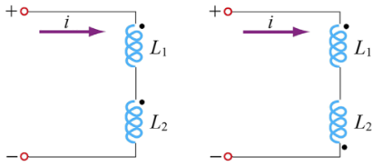

Inductancias mutuas, efecto de producir una fem en una bobina, debido al cambio de corriente en otra bobina acoplada.
\(\phi_{21} \implies\) El flujo del campo \(\vec B_1\) (generado por \(i_1\)) y concatenado por el bobinado \(2\).
Teniendo 2 bobinados, se induce una fem en el segundo por la corriente en el primero:
\begin{align} \epsilon_2 = - N_2 \frac{d \phi_{21}}{dt} = -N_2 \frac{d}{dt} \iint_{S_2} \vec B_1 (\vec r) \cdot d\vec s = -M_{21} \frac{d i_1}{dt} \end{align} \begin{align} M_{21} = N_2 \frac{d \phi_{21}}{di_1} \end{align}Para medios lineales:
\begin{align} M_{21} = N_2 \frac{\phi_{21}}{i_1} \end{align}\(M\) solo depende de la geometría de los bobinados (analogía con capacitores o resistores). Es una magnitud siempre positiva.
Teorema de la Reciprocidad (para medios lineales): \(M_{21} = M_{12} = M\)
Unidades: \([M] = H\) henrio. \(H = \frac{V\cdot s}{A}\)
fem autoinducida, generada por el propio flujo del campo sobre las espiras donde la corriente generó el campo original.
\begin{align} \epsilon_1 = - N_1 \frac{d \phi_{11}}{dt} = -N_1 \frac{d}{dt} \iint_{S_1} \vec B_1 (\vec r) \cdot d\vec s = -L_1 \frac{d i_1}{dt} \end{align} \begin{align} L_1 = N_1 \frac{d \phi}{d_{i_1}} \end{align}Para medios lineales:
\begin{align} L_1 = N_1 \frac{\phi}{i_1} \end{align}Inductor: elemento circuital de gran \(L\).
Ejemplo: autoinductancia de un solenoide.
\begin{align} L = N \frac{\phi_{seccion-solenoide}}{I} \\ L = N \frac{\frac{\mu_0 N I \pi R^2}{L}}{I} \\ L = \frac{\mu_0 N^2 \pi R^2 }{L} \\ \end{align}Vemos que no depende de la corriente, solo de las características geométricas.
En condiciones lineales, podemos definir un factor de acoplamiento como el cociente entre el flujo de enlace mutuo y el flujo total producido por una de las corrientes:
\begin{align} k = \frac{\phi_{12}}{\phi_{11}} = \frac{\phi_{21}}{\phi_{22}} \end{align}\(k\) es nulo para inductores desacoplados y tiende a 1 para el caso ideal de acoplamiento perfecto, es decir, sin flujo disperso.
\begin{align} M = k\sqrt{L_1 L_2} \end{align} \begin{align} \epsilon_1 = - \frac{d \phi_1}{dt} = - \frac{d}{dt} (\phi_{11} \pm \phi_{12}) \\ \end{align}El primer término \(\phi_{11}\) se debe a la autoinductancia y el segundo \(\phi_{12}\) a la inductancia mutua.
\begin{align} \epsilon_1 &= - [\frac{d \phi_{11}}{dt} \pm \frac{d \phi_{11}}{dt}] \\ &= - [\frac{d \phi_{11}}{dI_1} \frac{dI_1}{dt} \pm \frac{d \phi{12}}{dI_2} \frac{dI_2}{dt}] \\ &= - [L_1 \frac{dI_1}{dt} \pm M_{12} \frac{dI_2}{dt}] \\ \end{align}En conclusión:
\begin{align} \epsilon_1 = - L_1 \frac{dI_1}{dt} \pm M_{12} \frac{dI_2}{dt} \\ \epsilon_2 = - L_2 \frac{dI_2}{dt} \pm M_{21} \frac{dI_1}{dt} \\ \end{align}En los esquemas circuitales, indicamos con un punto los bornes de los inductores a través de los cuales corrientes simultáneamente entrantes o salientes producen flujos magnéticos aditivos. Los llamamos bornes homologos.

Cuando la corriente en ambos inductores entra por bornes homólogos (o salen por no homólogos o todo al revés), los flujos magnéticos son aditivos. En caso contrario son sustractivos.
\begin{align} \sum \epsilon - \sum iR = 0 \\ \sum \epsilon_{fuentes} - \sum L \frac{di}{dt} \pm \sum M \frac{di}{dt} - \sum iR = 0 \\ \end{align}obs: \(+\sum M\) cuando el flujo es aditivo, \(-\sum M\) cuando es sustractivo y \(0\) cuando no están acoplados magnéticamente.
Para un circuito con 2 inductores en serie, la fem inducida es la suma de las fem de cada inductor. En cada inductor hay una fem autoinducida y otra inducida por el otro inductor.
\begin{align} \epsilon = \epsilon_1 + \epsilon_2 \\ \end{align}\(L_{eq}\) para inductores aditivos.
\begin{align} L_{eq} = L_1 + L_2 + 2M \end{align}\(L_{eq}\) para inductores sustractivos.
\begin{align} L_{eq} = L_1 + L_2 - 2M \end{align}Energía almacenada por un inductor energizado
\begin{align} U = \frac 12 L I^2 \end{align}Energía almacenada por un sistema de dos inductores energizados
\begin{align} U = \frac 12 L_1 i_1^2 \pm M i_1 i_2 + \frac 12 L_2 i_2^2 \end{align}El término de la inductancia mutua será positivo si las corrientes entran por bornes homólogos y negativo si entran por bornes no homólogos a los bobinados.